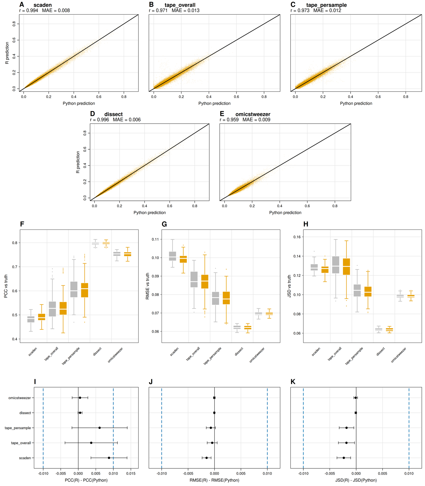

R implementations of deep learning methods
Sergej Ruff
2026-08-27
Source:vignettes/deep-learning-methods.Rmd
deep-learning-methods.RmdWhy these exist
Most deep-learning deconvolution tools are available only in Python.
Many wet-lab researchers work in R but not Python, which puts these
methods out of reach of the environments where the rest of their
transcriptomics analysis happens — preprocessing, visualisation,
statistics, functional interpretation, and the Seurat and
SingleCellExperiment structures those depend on.
This package provides native R implementations of Scaden, TAPE,
DISSECT, and OmicsTweezer, written in torch for R. They
accept Seurat and SingleCellExperiment objects
directly and support GPU acceleration through the same
device argument.
The shared workflow
All four follow the same four stages:
| Stage | Scaden | TAPE | DISSECT | OmicsTweezer |
|---|---|---|---|---|
| Simulate | scaden_sim_pb() |
tape_simulate() |
dissect_simulate() |
omics_simulate() |
| Process | scaden_process() |
tape_process() |
dissect_process() |
omics_process() |
| Train | scaden() |
tape_train() |
dissect_prop() |
omics_train() |
| Predict | scaden_predict() |
tape_predict() |
(returned by train) | omics_predict() |
| Wrapper | — | tape() |
dissect() |
omics_tweezer() |
Each method has its own page with a full worked example:
- Scaden — a three-model MLP ensemble. The simplest of the four and a reasonable first thing to run.
- TAPE — an autoencoder with a tissue-adaptive refinement stage that tunes the model on the target bulk data itself.
- DISSECT — semi-supervised consistency regularization, plus optional cell-type-specific expression estimation.
- OmicsTweezer — domain adaptation aligning simulated and real samples in a shared embedding space.
Input conventions
Two things trip people up when moving between methods.
Bulk orientation. tape_process(),
omics_process(), and dissect_process() expect
a genes × samples matrix. scaden_process()
infers orientation from the gene names, so either layout works
there.
The cell-type column. Defaults differ:
"CellType" for TAPE and OmicsTweezer,
"celltype" for DISSECT, and none at all for Scaden, which
requires celltype_col explicitly. Pass it explicitly in
every case and the question disappears.
Fidelity to the originals
Agreement with the Python implementations was evaluated using ten independent model runs across ten COVID-19 pseudo-bulk datasets, with both versions receiving identical training and test data — 100 matched prediction sets per method.

Prediction concordance and performance equivalence between R and Python implementations. (A-E) Agreement of predicted cell-type proportions across ten datasets and ten seeds. (F-H) Accuracy against ground truth. (I-K) Paired R-Python differences with 95% confidence intervals; dashed lines mark the ±0.01 equivalence margin.
Correlations between R and Python predictions ranged from 0.959 for OmicsTweezer to 0.996 for DISSECT, with mean absolute differences in predicted proportions between 0.0057 and 0.0140. Performance against known proportions was similarly preserved: mean R-Python differences did not exceed 0.0088 for Pearson correlation, 0.0015 for RMSE, or 0.0024 for JSD.
For context, a 0.01 difference in an individual cell-type estimate is one percentage point, which matters most for populations below 1% — the abundance range where the original Python implementations already struggle. Cross-language differences were generally within the run-to-run stochastic variation of the Python methods themselves.
Comparing methods
Since all four return a samples × cell-types matrix with matching names, comparison is a matter of collecting them:
preds <- list(
scaden = scaden_pred$average_output,
tape = tape_res$pred,
dissect = dissect_prop_res$fractions,
omicstweezer = ot_pred
)
rmse_table <- sapply(preds, function(p) {
quasar_prop_metrics(p, truth)$cell_type_rmse
})
round(rmse_table, 4)See Utilities for what
quasar_prop_metrics() returns.
References
- Menden, K., Marouf, M., Oller, S., Dalmia, A., Magruder, D. S., Kloiber, K., … & Bonn, S. (2020). Deep learning-based cell composition analysis from tissue expression profiles. Science Advances, 6(30), eaba2619.
- Chen, Y., Wang, Y., Chen, Y., Cheng, Y., Wei, Y., Li, Y., Wang, J., Wei, Y., Chan, T.-F., & Li, Y. (2022). Deep autoencoder for interpretable tissue-adaptive deconvolution and cell-type-specific gene analysis. Nature Communications, 13(1), 6735.
- Khatri, R., Machart, P., & Bonn, S. (2024). DISSECT: deep semi-supervised consistency regularization for accurate cell type fraction and gene expression estimation. Genome Biology, 25(1), 112.
- Yang, X., Zhao, F., Ren, T., Chen, C., Byrne, K. T., Danilov, A. V., … & Xia, Z. (2025). OmicsTweezer: A distribution-independent cell deconvolution model for multi-omics data. Cell Genomics, 5(9).
If you use any of these R implementations, cite both the QUASAR paper and the original publication of the method.